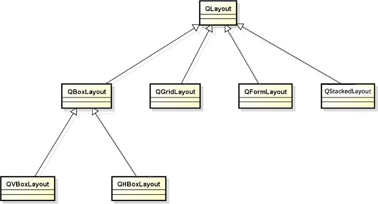
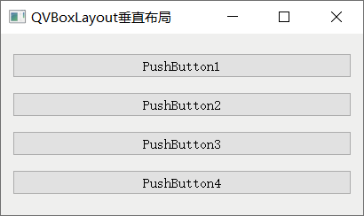
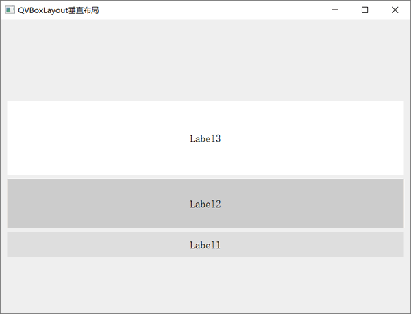
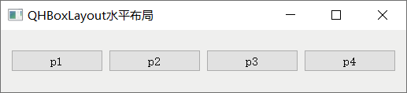
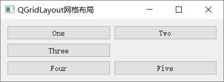
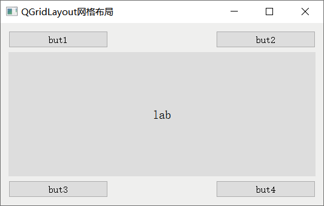
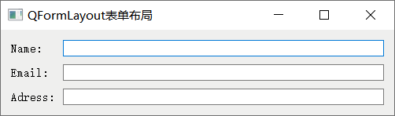
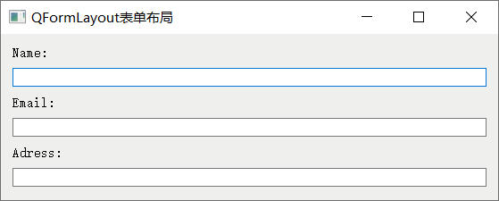

首页 > 编程笔记
Qt布局管理详解（5种布局控件）
实际开发中，一个界面上可能包含十几个控件，手动调整它们的位置既费时又费力。作为一款成熟的 GUI 框架，Qt 提供了很多摆放控件的辅助工具（又称布局管理器或者布局控件），它们可以完成两件事：
总之借助布局管理器，我们无需再逐个调整控件的位置和大小，可以将更多的精力放在软件功能的实现上。
Qt 共提供了 5 种布局管理器，每种布局管理器对应一个类，分别是 QVBoxLayout（垂直布局）、QHBoxLayout（水平布局）、QGridLayout（网格布局）、QFormLayout（表单布局）和 QStackedLayout（分组布局），它们的继承关系如下图所示：
图 2 展示了 4 个 QPushButton 按钮利用 QVBoxLayout 垂直布局的效果。实际场景中，QVBoxLayout 中还可以放置其它控件，比如 QLabel 文本框、QLineEdit 单行输入框等。
程序中使用 QVBoxLayout 布局控件，需提前引入
QVBoxLayout 类没有新增任何成员方法，它只能使用从父类继承的成员方法，下表给大家罗列了常用的一些：
举个简单的例子：
执行结果为：
使用 QHBoxLayout 水平布局控件，程序中要提前引入

图 5 QHBoxLayout水平布局实例
QGridLayout 的行标和列标都从 0 开始，例如图 6 中 one 按钮的位置为 (0, 0)，Four 按钮的位置为 (2, 0)。我们可以随意指定 QGridLayout 的行数和列数，各个控件可以随意摆放，必要时某些位置可以空着不用。
使用 QGridLayout 网格控件，程序中需引入
QGridLayout 类提供了很多实用的成员方法，常用的如下表所示：
举个简单的例子：
生成图 8 这样的界面，实现的方法有很多，例如：
第 1 种方法最大的弊端在于，各个控件的尺寸都是固定的，不会随着父窗口尺寸的改变而改变。第 2、3、4 种方法都是借助布局控件实现的，各个控件的尺寸可以自动调整，但前两种方法需要手动设置每一列的 strech 拉伸系数，而第 4 种方式不需要。总之对于生成类似图 8 这样的表单窗口，建议大家使用 QFormLayout 控件，因为使用 QFormLayout 编写的代码量最少，开发效率最高。
QFormLayout 可以容纳很多个输入框以及对应的标签，并将它们从上到下依次排列在界面上（如图 8 所示）。大多数情况下，QFormLayout 底层是用 QGridLayout 网格布局管理器实现的，和后者不同的是，QFormLayout 只包含 2 列（不限制行数），且第一列放置标签，第二列放置输入框。
使用 QFormLayout 布局控件之前，程序中应引入
下表给大家罗列了操作 QFormLayout 对象常用的一些成员方法：
举个简单的例子：
举个简单的例子，下图中的界面就使用了 QStackedLayout 布局管理器：

图 10 QStackedLayout布局管理器
整个窗口被一分为二，左侧是 QListWidget 列表控件，右侧是 QStackedLayout 布局管理器。QStackedLayout 中包含 QPushButonn、QLabel 和 QLineEdit 这 3 个控件，但每次只能 3 个控件中的一个。
使用 QStackedLayout 布局控件，程序中必须先引入
这里我们以图 10 所示的窗口为例，实现代码如下：
- 自动调整控件的位置，包括控件之间的间距、对齐等；
- 当用户调整窗口大小时，位于布局管理器内的控件也会随之调整大小，从而保持整个界面的美观。
总之借助布局管理器，我们无需再逐个调整控件的位置和大小，可以将更多的精力放在软件功能的实现上。
Qt 共提供了 5 种布局管理器，每种布局管理器对应一个类，分别是 QVBoxLayout（垂直布局）、QHBoxLayout（水平布局）、QGridLayout（网格布局）、QFormLayout（表单布局）和 QStackedLayout（分组布局），它们的继承关系如下图所示：

图 1 各个布局管理类的继承关系
图 1 各个布局管理类的继承关系
QVBoxLayout垂直布局
垂直布局指的是将所有控件从上到下（或者从下到上）依次摆放，例如：

图 2 QVBoxLayout垂直布局
图 2 QVBoxLayout垂直布局
图 2 展示了 4 个 QPushButton 按钮利用 QVBoxLayout 垂直布局的效果。实际场景中，QVBoxLayout 中还可以放置其它控件，比如 QLabel 文本框、QLineEdit 单行输入框等。
程序中使用 QVBoxLayout 布局控件，需提前引入
<QVBoxLayout>头文件。每个 QVBoxLayout 控件本质都是 QVBoxLayout 类的实例对象，该类提供了两个构造函数，分别是：
QVBoxLayout() QVBoxLayout(QWidget *parent)创建 QVBoxLayout 控件的同时可以指定父窗口，那么它将作为父窗口中管理其它控件的工具；也可以暂时不指定父窗口，待全部设置完毕后再将其添加到某个窗口中。
QVBoxLayout 类没有新增任何成员方法，它只能使用从父类继承的成员方法，下表给大家罗列了常用的一些：
| 成员方法 | 功 能 |
|---|---|
| void QBoxLayout::addWidget(QWidget *widget, int stretch = 0, Qt::Alignment alignment = Qt::Alignment()) |
向布局管理器中添加指定的 widget 控件。 默认情况下，stretch 拉伸系数为 0，表示 widget 控件的尺寸为默认值；alignment 是一个枚举类型参数，默认值也是 0，表示该控件会填满占用的整个空间。 |
| void QBoxLayout::addStretch(int stretch = 0) |
添加一个空白行，整个窗口中除了控件占用的区域外，其它区域可以由多个（≥0）空白行分摊，分摊比例取余于各个空白行设置的 stretch 参数的值。 strech 参数的默认值为 0，表示当窗口很小时，空白行可以不占据窗口空间。当窗口中包含多个 strech 值为 0 的空白行时，它们会平分窗口中的空白区域。 |
| void QBoxLayout::addSpacing(int size) | 添加一个 size 大小的固定间距。 |
| void QLayout::setMargin(int margin) | 设置布局管理器中所有控件的外边距，上、下、左、右外边距的大小都为 margin。默认情况下，所有方向的外边距为 11 px。 |
| void QLayout::setContentsMargins(int left, int top, int right, int bottom) | 设置布局管理器中所有控件的外边距，和 setMargin() 的区别是，此方法可以自定义上、下、左、右外边距的值。 |
| void QBoxLayout::setDirection(Direction direction) | 设置布局管理器中控件的布局方向，Direction 是一个枚举类型，对于 QVBoxLayout 布局管理器，direction 参数的值通常选择 QBoxLayout::TopToBottom（从上到下依次摆放）或者 QBoxLayout::BottomToTop（从下到上依次摆放）。 |
| bool QBoxLayout::setStretchFactor(QWidget *widget, int stretch) | 设置布局管理器中某个控件的拉伸系数。 |
| bool QBoxLayout::setStretchFactor(QLayout *layout, int stretch) | 布局管理器内部可以再放置一个布局管理器，该方法用来设置内部某个布局管理器的拉伸系数。 |
举个简单的例子：
#include <QApplication>
#include <QWidget>
#include <QLabel>
#include <QVBoxLayout>
int main(int argc, char *argv[])
{
QApplication a(argc, argv);
//创建主窗口
QWidget widget;
widget.setWindowTitle("QVBoxLayout垂直布局");
//创建垂直布局管理器
QVBoxLayout *layout=new QVBoxLayout;
//设置布局管理器中所有控件从下往上依次排列
layout->setDirection(QBoxLayout::BottomToTop);
//连续创建 3 个文本框，并设置它们的背景和字体大小
QLabel lab1("Label1");
lab1.setStyleSheet("QLabel{background:#dddddd;font:20px;}");
lab1.setAlignment(Qt::AlignCenter);
QLabel lab2("Label2");
lab2.setStyleSheet("QLabel{background:#cccccc;font:20px;}");
lab2.setAlignment(Qt::AlignCenter);
QLabel lab3("Label3");
lab3.setStyleSheet("QLabel{background:#ffffff;font:20px;}");
lab3.setAlignment(Qt::AlignCenter);
//将 3 个文本框和 2 个空白行添加到管理器中，它们的伸缩系数比是 2:1:2:3:3
layout->addStretch(2);
layout->addWidget(&lab1,1);
layout->addWidget(&lab2,2);
layout->addWidget(&lab3,3);
layout->addStretch(3);
//将布局管理器添加到 widget 窗口中
widget.setLayout(layout);
widget.show();
return a.exec();
}
程序中做了以下几个操作：
- 通过调用 setDirection() 方法，将添加到 QVBoxLayout 管理器中的所有控件（包括空白行）按照从下到上的顺序依次摆放。举个例子，由于 lab1 文本框是第二个添加到管理器中的，因此在最终显示的界面中，lab1 位于倒数第二的位置。
- 通过调用 addStrech() 方法，向管理器中先后添加了两个空白行，它们的伸缩系数分别为 2 和 3，因此 widget 窗口中的空白区域会平均分为 5 份，一个空白行占 3 份，另一个占 2 份。
- 通过调用 addWidget() 方法，向管理器中先后添加了 3 个文本框，它们的拉伸系数比为 1:2:3，所以当我们拉伸 widget 窗口时，三个文本框的大小（宽度）呈现 1:2:3 的关系。
- 通过调用 setLayout() 方法，成功地将 layout 布局管理器添加到了 widget 窗口中。当然，也可以在创建 layout 对象时指定 widget 作为它的父窗口，两种方式是完全等价的。
执行结果为：

图 3 QVBoxLayout 实例演示
图 3 QVBoxLayout 实例演示
QHBoxLayout水平布局
水平布局指的是将所有控件从左到右（或者从右到左）依次摆放，例如：

图 4 QHBoxLayout水平布局
图 4 QHBoxLayout水平布局
使用 QHBoxLayout 水平布局控件，程序中要提前引入
<QHBoxLayout>头文件。QHBoxLayout 和 QVBoxLayout 继承自同一个类，它们的用法非常相似，比如 QHBoxLayout 类也提供了两个构造函数：QHBoxLayout() QHBoxLayout(QWidget *parent)QHBoxLayout 类也没有新添任何成员方法，它只能使用从父类继承的成员方法。因此，表 1 中罗列的所有成员方法也同样适用于 QHBoxLayout 对象。
举个简单的例子：注意，当 QHBoxLayout 对象调用表 1 中的 addStretch() 方法时，表示添加一个空白列。
#include <QApplication>
#include <QWidget>
#include <QLabel>
#include <QHBoxLayout>
int main(int argc, char *argv[])
{
QApplication a(argc, argv);
//创建主窗口
QWidget widget;
widget.setWindowTitle("QHBoxLayout水平布局");
//创建水平布局管理器
QHBoxLayout *layout=new QHBoxLayout;
//设置布局管理器中所有控件的布局方向为从右往左依次排列
layout->setDirection(QBoxLayout::RightToLeft);
//连续创建 3 个文本框，并设置它们的背景和字体大小
QLabel lab1("Label1");
lab1.setStyleSheet("QLabel{background:#dddddd;font:20px;}");
lab1.setAlignment(Qt::AlignCenter);
QLabel lab2("Label2");
lab2.setStyleSheet("QLabel{background:#cccccc;font:20px;}");
lab2.setAlignment(Qt::AlignCenter);
QLabel lab3("Label3");
lab3.setStyleSheet("QLabel{background:#ffffff;font:20px;}");
lab3.setAlignment(Qt::AlignCenter);
//将 3 个文本框和 2 个空白列添加到管理器中，它们的拉伸系数比是 2:1:2:3:3
layout->addStretch(2);
layout->addWidget(&lab1,1);
layout->addWidget(&lab2,2);
layout->addWidget(&lab3,3);
layout->addStretch(3);
//将布局管理器添加到 widget 窗口中
widget.setLayout(layout);
widget.show();
return a.exec();
}
程序执行结果为：
图 5 QHBoxLayout水平布局实例
图 5 中，最左侧和最右侧各添加了一个空白列，它们的伸缩比例为 3:2，即它们的宽度比为 3:2。
QGridLayout网格布局
网格布局又称格栅布局或者表格布局，指的是将一些控件按照行和列排列在窗口上，例如：

图 6 QGridLayout网格布局
图 6 QGridLayout网格布局
QGridLayout 的行标和列标都从 0 开始，例如图 6 中 one 按钮的位置为 (0, 0)，Four 按钮的位置为 (2, 0)。我们可以随意指定 QGridLayout 的行数和列数，各个控件可以随意摆放，必要时某些位置可以空着不用。
使用 QGridLayout 网格控件，程序中需引入
<QGridLayout>头文件。每个 QGridLayout 控件都是 QGridLayout 类的一个实例对象，该类提供了两个构造函数，分别是：
QGridLayout(QWidget *parent) QGridLayout()
QGridLayout 类提供了很多实用的成员方法，常用的如下表所示：
| 成员方法 | 功 能 |
|---|---|
| int QGridLayout::rowCount() const | 获取网格的行数。 |
| int QGridLayout::columnCount() const | 获取网格的列数。 |
| void QGridLayout::addWidget(QWidget *widget, int row, int column, Qt::Alignment alignment = Qt::Alignment()) | 将 widget 控件添加到网格中的 (row,column) 位置处，并且可以自定义该控件的对齐方式。 |
| void QGridLayout::addWidget(QWidget *widget, int fromRow, int fromColumn, int rowSpan, int columnSpan, Qt::Alignment alignment = Qt::Alignment()) | 将 widget 控件从 (fromRow, fromColumn) 位置开始，跨 rowSpan 行和 ColumnSpan 列添加到网格中，并且可以自定义该控件的对齐方式。 |
| void QGridLayout::addLayout(QLayout *layout, int row, int column, Qt::Alignment alignment = Qt::Alignment()) | 向网格中的 (row, column) 位置处添加 layout 布局管理器。 |
| void QGridLayout::addLayout(QLayout *layout, int row, int column, int rowSpan, int columnSpan, Qt::Alignment alignment = Qt::Alignment()) | 将 layout 布局管理器从 (row, column) 位置开始，跨 rowSpan 行和 ColumnSpan 列添加到网格中，并且可以自定义该布局控件的对齐方式。 |
| void QGridLayout::setColumnStretch(int column, int stretch) | 给指定的第 column 列设置伸缩系数。 |
| void QGridLayout::setRowStretch(int row, int stretch) | 给指定的第 row 行设置伸缩系数。 |
| void QGridLayout::setColumnMinimumWidth(int column, int minSize) | 设置第 column 列的最小宽度。 |
| void QGridLayout::setRowMinimumHeight(int row, int minSize) | 设置第 row 行的最小宽度。 |
举个简单的例子：
#include <QApplication>
#include <QWidget>
#include <QLabel>
#include <QGridLayout>
#include <QPushButton>
int main(int argc, char *argv[])
{
QApplication a(argc, argv);
//创建主窗口
QWidget widget;
widget.setWindowTitle("QGridLayout网格布局");
//创建 4 个按钮和 1 个文本框
QPushButton *but1 = new QPushButton("but1");
QPushButton *but2 = new QPushButton("but2");
QLabel *lab3 = new QLabel("lab");
lab3->setStyleSheet("QLabel{background:#dddddd;font:20px;}");
lab3->setAlignment(Qt::AlignCenter);
QPushButton *but3 = new QPushButton("but3");
QPushButton *but4 = new QPushButton("but4");
//创建网格布局控件
QGridLayout *layout = new QGridLayout;
//向 layout 中添加控件，并指定各个控件的位置
layout->addWidget(but1, 0, 0);
layout->addWidget(but2, 0, 2);
layout->addWidget(lab3, 1, 0, 3, 3);
layout->addWidget(but3, 4, 0);
layout->addWidget(but4, 4, 2);
//将 layout 添加到 widget 窗口中
widget.setLayout(layout);
widget.show();
return a.exec();
}
程序运行结果为：

图 7 QGridLayout网格布局实例
图 7 QGridLayout网格布局实例
图 7 中，文本框控件从 (1,0) 位置开始，占据了 3 行 3 列的表格空间。
QFormLayout表单布局
Qt 提供了很多种输入框控件，包括 QLineEdit 单行输入框、QTextEdit 多行输入框等。通常情况下，每个输入框的旁边都会附带一些文字（又称标签），用来提示用户需要输入的信息。例如，图 8 中第一个输入框的标签为 "Name"，提示用户填写自己的姓名。

图 8 QFromLayout表单布局
图 8 QFromLayout表单布局
生成图 8 这样的界面，实现的方法有很多，例如：
- 分别创建 3 个 QLabel 控件和 3 个 QLineEdit 控件，手动指定它们的位置；
- 在 QHBoxLayout 中嵌套 3 个 QVBoxLayout，又或者在 QVBoxLayout 中嵌套 3 个 QHBoxLayout，然后再添加 3 个 QLabel 控件和 3 个 QLineEdit 控件；
- 使用 QGridLayout 创建一个 3 行 2 列的表格，向表格中添加 3 个 QLabel 控件和 3 个 QLineEdit 控件。
- 使用 QFormLayout 表单布局控件实现。
第 1 种方法最大的弊端在于，各个控件的尺寸都是固定的，不会随着父窗口尺寸的改变而改变。第 2、3、4 种方法都是借助布局控件实现的，各个控件的尺寸可以自动调整，但前两种方法需要手动设置每一列的 strech 拉伸系数，而第 4 种方式不需要。总之对于生成类似图 8 这样的表单窗口，建议大家使用 QFormLayout 控件，因为使用 QFormLayout 编写的代码量最少，开发效率最高。
QFormLayout 可以容纳很多个输入框以及对应的标签，并将它们从上到下依次排列在界面上（如图 8 所示）。大多数情况下，QFormLayout 底层是用 QGridLayout 网格布局管理器实现的，和后者不同的是，QFormLayout 只包含 2 列（不限制行数），且第一列放置标签，第二列放置输入框。
使用 QFormLayout 布局控件之前，程序中应引入
<QFormLayout>头文件。每一个表单布局控件都是 QFormLayout 类的一个实例对象，该类仅提供了一个构造函数：
QFormLayout(QWidget *parent = Q_NULLPTR)
下表给大家罗列了操作 QFormLayout 对象常用的一些成员方法：
| 成员方法 | 功 能 |
|---|---|
| void QFormLayout::addRow(QWidget *label, QWidget *field) | 将指定的 field 控件和存储标签的 label 控件添加到表单控件中的末尾。 |
| void QFormLayout::addRow(const QString &labelText, QWidget *field) | 将指定的 field 控件和 labelText 标签添加到表单控件的末尾。 |
| void QFormLayout::insertRow(int row, const QString &labelText, QWidget *field) | 将指定的 field 控件和 labelText 标签插入到表单控件中指定行的位置。 |
| void QFormLayout::removeRow(int row) | 删除表单控件中的指定行。 |
| void QFormLayout::removeRow(QWidget *widget) | 删除表单控件中 widget 控件所在的行。 |
| void setRowWrapPolicy(RowWrapPolicy policy) |
设置标签的显示格式，默认标签位于控件的左侧。 RowWrapPolicy 是 QFormLayout 中定义的枚举类型，该类型包含 3 个值：
|
| void QFormLayout::setSpacing(int spacing) | 将行间距和列间距设置为 spacing。 |
举个简单的例子：
#include <QApplication>
#include <QWidget>
#include <QLineEdit>
#include <QFormLayout>
int main(int argc, char *argv[])
{
QApplication a(argc, argv);
//创建主窗口
QWidget widget;
widget.setWindowTitle("QFormLayout表单布局");
//创建 4 个按钮和 1 个文本框
QFormLayout* layout = new QFormLayout();
//设置表单中的标签都位于控件的上方
layout->setRowWrapPolicy(QFormLayout::WrapAllRows);
//添加 3 行输入框和标签
layout->addRow("Name:",new QLineEdit());
layout->addRow("Email:",new QLineEdit());
layout->addRow("Adress:",new QLineEdit());
//设置行间距和列间距为 10
layout->setSpacing(10);
//将 layout 表单添加到 widget 窗口中
widget.setLayout(layout);
widget.show();
return a.exec();
}
程序运行结果为：

图 9 QFormLayout表单布局实例
图 9 QFormLayout表单布局实例
QStackedLayout分组布局
QStackedLayout 布局管理器可以容纳多个控件或者窗口，但每次只显示其中的一个。举个简单的例子，下图中的界面就使用了 QStackedLayout 布局管理器：
图 10 QStackedLayout布局管理器
整个窗口被一分为二，左侧是 QListWidget 列表控件，右侧是 QStackedLayout 布局管理器。QStackedLayout 中包含 QPushButonn、QLabel 和 QLineEdit 这 3 个控件，但每次只能 3 个控件中的一个。
QStackedLayout 自身无法切换当前显示的控件或窗口，实际应用时通常和 QListWidget 或者 QComboBox 搭配使用。
使用 QStackedLayout 布局控件，程序中必须先引入
<QStackedLayout>头文件。 每个 QStackedLayout 控件都是 QStackedLayout 类的一个实例对象，该类提供有 3 个构造函数，分别是：QStackedLayout() QStackedLayout(QWidget *parent) QStackedLayout(QLayout *parentLayout)借助第二个构造函数，我们可以将 QStackedLayout 添加到指定的 parent 窗口中；借助第三个构造函数，我们可以将 QStackedLayout 嵌入到指定的 parentLayout 布局控件中
下表罗列了操作 QStackedLayout 对象常用的一些成员方法：本节学习的 5 种布局控件都可以嵌套使用，例如将 QVBoxLayout 放到 QHBoxLayout 内部、将 QGridLayout 放到 QStackedLayout 内部等。
| 成员方法 | 功 能 |
|---|---|
| int QStackedLayout::addWidget(QWidget *widget) | 将 widget 控件添加到 QStackedLayout 控件中。 |
| int QStackedLayout::insertWidget(int index, QWidget *widget) | 将 widget 控件插入到 QStackedLayout 控件指定的位置处。 |
| 信号函数 | 功 能 |
| void QStackedLayout::currentChanged(int index) | 切换当前显示的控件时，会触发此信号，index 为显示的新控件的索引。 |
| void QStackedLayout::widgetRemoved(int index) | 移除某个控件时，会触发此信号，index 为被移除控件的索引。 |
| 槽函数 | 功 能 |
| void setCurrentIndex(int index) | 将第 index 个控件作为要显示的控件。 |
| void QStackedLayout::setCurrentWidget(QWidget *widget) | 设置 widget 作为当前要实现的控件。注意，必须保证 widget 存储在 QStackedLayout 控件中。 |
这里我们以图 10 所示的窗口为例，实现代码如下：
#include <QApplication>
#include <QWidget>
#include <QPushButton>
#include <QLabel>
#include <QLineEdit>
#include <QStackedLayout>
#include <QListWidget>
#include <QHBoxLayout>
int main(int argc, char *argv[])
{
QApplication a(argc, argv);
//创建主窗口
QWidget widget;
widget.setWindowTitle("QStackedLayout分组布局");
widget.resize(600,400);
//向主窗口中添加一个水平布局控件
QHBoxLayout *layout=new QHBoxLayout;
//创建一个列表
QListWidget listWidget(&widget);
listWidget.setMinimumWidth(150);
listWidget.setFont(QFont("宋体",14));
listWidget.addItem("QPushButton");
listWidget.addItem("QLabel");
listWidget.addItem("QLineEdit");
//新建 3 个窗口，分别放置文本框、按钮和单行输入框
QWidget widget1;
widget1.setMinimumSize(400,400);
QPushButton but1("这是一个按钮",&widget1);
QWidget widget2;
widget2.setMinimumSize(400,400);
QLabel lab1("这是一个文本框",&widget2);
QWidget widget3;
widget3.setMinimumSize(400,400);
QLineEdit edit("这是一个单行输入框",&widget3);
//创建一个分组布局，将 3 个窗口添加到分组控件中
QStackedLayout *stackedLayout = new QStackedLayout;
stackedLayout->addWidget(&widget1);
stackedLayout->addWidget(&widget2);
stackedLayout->addWidget(&widget3);
//layout 第一列添加 QListWidget 控件，第二列添加分组布局控件，设置它们的伸缩系数比为 1:4
layout->addWidget(&listWidget,1);
layout->addLayout(stackedLayout,4);
//将 layout 水平布局控件添加到 widget 窗口中
widget.setLayout(layout);
widget.show();
//连接信号和槽，实现当点击列表中的某一项，切换分组布局管理器显示的控件
QObject::connect(&listWidget,&QListWidget::currentRowChanged,stackedLayout,&QStackedLayout::setCurrentIndex);
return a.exec();
}
此程序中，我们在 QHBoxLayout 水平布局控件内又放置了一个 QStackedLayout 分组布局控件。感兴趣的读者可以编写程序，测试其它布局控件之间嵌套的效果。关注公众号「站长严长生」，在手机上阅读所有教程，随时随地都能学习。内含一款搜索神器，免费下载全网书籍和视频。

微信扫码关注公众号